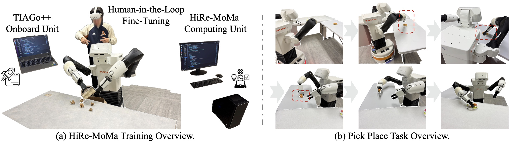
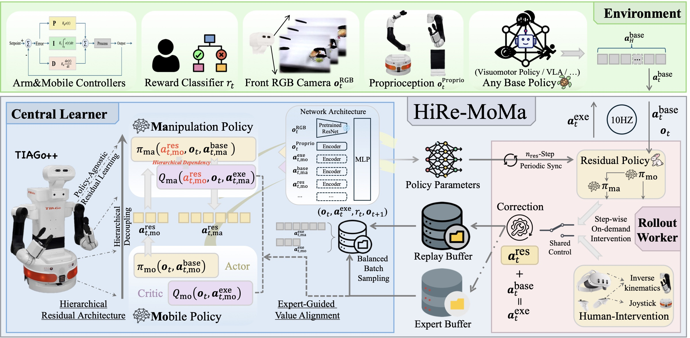
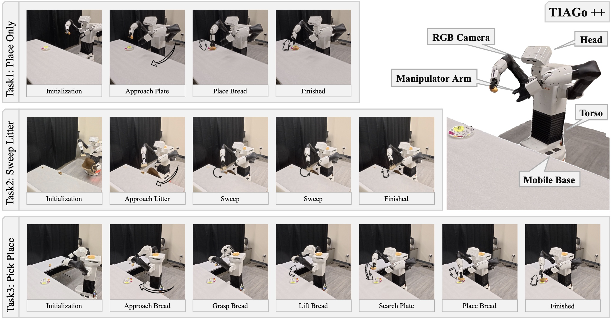
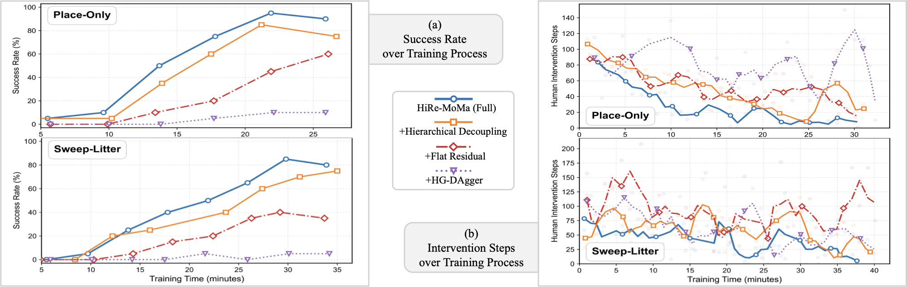
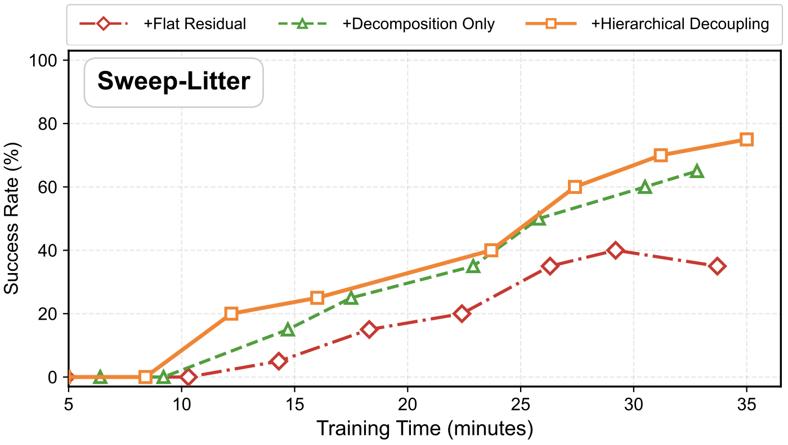
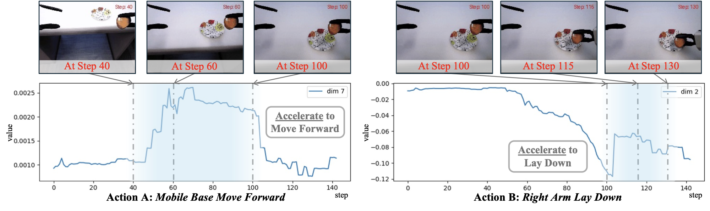

*Work done during an internship at UC Riverside. †Corresponding author.
CoRL 2026
Place Only
Sweep Litter
Pick Place
HiRe-MoMa fine-tunes a frozen base policy on a TIAGo++ mobile manipulator directly in the real world. Shown: autonomous rollouts after fine-tuning.
~30 min
online interaction
39% → 75%
average success rate
1.29×
faster execution
<20%
human-intervention data
Mobile Manipulation (MoMa) is a cornerstone of autonomous robotic systems, yet real-world fine-tuning of such tasks remains a formidable challenge due to their high-dimensional action spaces and the intricate coupling between heterogeneous modules. In this paper, we propose HiRe-MoMa (Hierarchical Residual Mobile Manipulation), a systematic framework for stable and sample-efficient real-world fine-tuning of complex MoMa systems. At its core, HiRe-MoMa adopts a Hierarchical Residual Architecture that fine-tunes a frozen base policy. A Policy-Agnostic Residual learns additive corrections atop the base policy, while Hierarchical Decoupling splits the residual into mobile-base and manipulator-arm heads with unidirectional conditioning, mitigating gradient interference and aligning corrections with the platform's physical hierarchy. To improve sample efficiency in data-expensive real-world settings, we integrate Expert-Guided Value Alignment, which leverages sparse human interventions with under 20% training coverage to reshape the critic's value landscape, effectively guiding autonomous exploration through expert priors. Extensive real-world experiments on the TIAGo++ platform demonstrate that HiRe-MoMa consistently enhances task performance with only around 30 minutes of online interaction, regardless of the base policy architecture. To our knowledge, this is among the first frameworks to enable efficient on-robot fine-tuning for mobile manipulation in the real world, providing a practical paradigm for deploying complex robotic systems in dynamic, human-centric environments.
Fine-tuning a mobile manipulator in the real world is hard: the action space is high-dimensional, and the base and arm are tightly coupled, so a small error in the base's approach becomes a large pose error at the gripper. HiRe-MoMa keeps the pre-trained base policy frozen and learns a residual on top of it. Training runs asynchronously: a central learner updates the residual while a rollout worker drives the robot under shared control with a human expert.

System overview. (a) An onboard unit handles real-time control and human interaction; a separate computing unit runs policy optimization and action prediction. (b) In Pick Place, small deviations of the base are magnified at the end-effector, so even routine grasps demand precise base–arm coordination.

HiRe-MoMa framework. (Right) Rollout worker: a frozen base policy is augmented with a learnable residual, and sparse human interventions during critical phases are stored in an expert buffer. (Left) Central learner: the residual is optimized with a Hierarchical Residual Architecture and an Expert-Guided Value Alignment loss.
Policy-agnostic residual. A residual policy learns additive corrections on top of the frozen base policy, so the same procedure works for any base policy (Diffusion Policy, ACT, ...) without needing its log-likelihood. It is trained off-policy with a sparse success reward, and the correction is bounded to stay close to the base trajectory:
$$\mathbf{a}^{\text{exe}}_t = \mathbf{a}^{\text{base}}_t + \pi^{\text{res}}_\theta(\mathbf{o}_t, \mathbf{a}^{\text{base}}_t), \qquad \|\mathbf{a}^{\text{res}}\| \le \epsilon.$$
Hierarchical decoupling. Instead of one residual over the full action space, HiRe-MoMa uses separate heads for the mobile base and the manipulator. The arm head is conditioned on the base correction, following the platform's physical hierarchy: where the arm should reach depends on where the base goes, not the reverse.
$$\begin{aligned} \mathbf{a}^{\text{res}}_{t,\text{mo}} &= \pi^{\text{res}}_{\theta_{\text{mo}}}(\mathbf{o}_t, \mathbf{a}^{\text{base}}_{t,\text{mo}}), \\ \mathbf{a}^{\text{res}}_{t,\text{ma}} &= \pi^{\text{res}}_{\theta_{\text{ma}}}(\mathbf{a}^{\text{res}}_{t,\text{mo}}, \mathbf{o}_t, \mathbf{a}^{\text{base}}_{t,\text{ma}}). \end{aligned}$$
Expert-guided value alignment. A human can take over at any step through VR teleoperation, and these interventions are kept in an expert buffer. Rather than imitating them directly, which is sensitive to teleoperation noise, an auxiliary loss shapes the critic to prefer the human's action \(\mathbf{a}^h_t\) over the policy's:
$$\mathcal{L}_{\text{align}} = \lambda_{\text{imi}}\, \mathbb{E}\left[\log\left(1 + \exp\left(Q_\phi(\mathbf{o}_t, \mathbf{a}^{\text{res}}_t) - Q_\phi(\mathbf{o}_t, \mathbf{a}^h_t)\right)\right)\right].$$
All experiments run on a TIAGo++ with the torso and head fixed, giving a 17-dimensional action space (a 3-DoF mobile base and two 7-DoF arms). The policy observes one front RGB camera and proprioception, and the reward is a sparse binary success signal. Human interventions come from a Meta Quest 3 teleoperation interface. We evaluate three tasks of increasing difficulty, each over 20 trials with randomized initialization.

Real-world tasks. Place Only (single-arm placement), Sweep Litter (dual-arm coordination), and Pick Place (long-horizon base–arm coordination).
All methods fine-tune the same frozen Diffusion Policy (DP). +HG-DAgger learns the residual by regression on human corrections; +Flat Residual (the HIL-SERL residual) uses a single residual head over the whole action space. HiRe-MoMa improves both success rate and execution efficiency on every task.
| Task | Training (min) |
Success Rate (%) ↑ | Episode Length (steps) ↓ | ||||||
|---|---|---|---|---|---|---|---|---|---|
| Base (DP) | +HG-DAgger | +Flat Residual | HiRe-MoMa | Base (DP) | +HG-DAgger | +Flat Residual | HiRe-MoMa | ||
| Place Only | 25 | 50.0 | 10.0 (−80%) | 60.0 (+20%) | 95.0 (+90%) | 342 | 420 (0.81×) | 329 (1.03×) | 235 (1.46×) |
| Sweep Litter | 30 | 45.0 | 5.0 (−89%) | 40.0 (−11%) | 90.0 (+100%) | 359 | 478 (0.75×) | 394 (0.91×) | 271 (1.32×) |
| Pick Place | 40 | 22.5 | 5.0 (−78%) | 27.5 (+22%) | 40.0 (+78%) | 664 | 742 (0.75×) | 649 (1.02×) | 552 (1.20×) |
| Average | 31.7 | 39.2 | 6.7 (−83%) | 42.5 (+8%) | 75.0 (+91%) | 455.0 | 546.7 (0.82×) | 457.3 (0.99×) | 352.7 (1.29×) |
+HG-DAgger
+Flat Residual (HIL-SERL)
HiRe-MoMa
+HG-DAgger
+Flat Residual (HIL-SERL)
HiRe-MoMa
HG-DAgger overfits to the sparse human corrections, and the flat residual tends to drift and predict unstable corrections.
HiRe-MoMa makes no assumptions about the base policy. With ACT, a Transformer-based policy, as the base, it improves the average success rate by 94%. The final performance is still bounded by the base policy's initial coverage.
| Task | Training (min) | Success Rate (%) ↑ | Episode Length (steps) ↓ | ||
|---|---|---|---|---|---|
| Base (ACT) | HiRe-MoMa | Base (ACT) | HiRe-MoMa | ||
| Place Only | 25 | 40 | 80 (+100%) | 381 | 303 (1.26×) |
| Sweep Litter | 30 | 40 | 75 (+88%) | 362 | 297 (1.22×) |
| Average | 27.5 | 40.0 | 77.5 (+94%) | 371.5 | 300.0 (1.24×) |
Starting from the frozen DP, each column adds one component on top of the previous one (base → fine-tuned). Splitting the residual into base and arm heads gives the largest gain, raising the average success rate from 50.0% to 85.0%. Adding value alignment brings it to 92.5% and shortens episodes further, while requiring fewer human interventions during training.
| Task | Training (min) | Success Rate (%) ↑ | Episode Length (steps) ↓ | ||||
|---|---|---|---|---|---|---|---|
| +Flat Residual | +Hier. Decoupling | +Alignment (Full) | +Flat Residual | +Hier. Decoupling | +Alignment (Full) | ||
| Place Only | 25 | 50→60 | 50→85 | 50→95 | 342→329 | 342→283 | 342→235 |
| Sweep Litter | 30 | 45→40 | 45→85 | 45→90 | 359→394 | 359→304 | 359→271 |
| Average | 27.5 | 47.5→50.0 | 47.5→85.0 | 47.5→92.5 | 350.5→361.5 | 350.5→293.5 | 350.5→253.0 |

Training dynamics over real training time. (a) Success rate: HiRe-MoMa stays ahead throughout training. (b) Human intervention steps: HiRe-MoMa needs fewer interventions and converges faster; the gap to +Hierarchical Decoupling shows the effect of the alignment loss.

Decomposition vs. conditioning on Sweep Litter. Splitting the action space accounts for most of the gain; unidirectional conditioning adds a smaller further improvement.

Residual corrections on Place Only for the base's forward velocity (left) and the right arm's vertical position (right). The corrections concentrate at critical phases, speeding up the approach and the lay-down motion, which compensates for the base's drift and the arm's kinematic inaccuracies.
Place Only
Sweep Litter
On-robot fine-tuning at 16× speed. The operator wears a Meta Quest 3 and steps in only when needed.
@inproceedings{gong2026hiremoma,
title = {Hierarchical Residual Policy Learning for Real-World Mobile Manipulation with Sparse Human Guidance},
author = {Gong, Zhefei and Jiang, Hefeifei and Wang, Zehao and Li, Jiachen},
booktitle = {Conference on Robot Learning (CoRL)},
year = {2026}
}